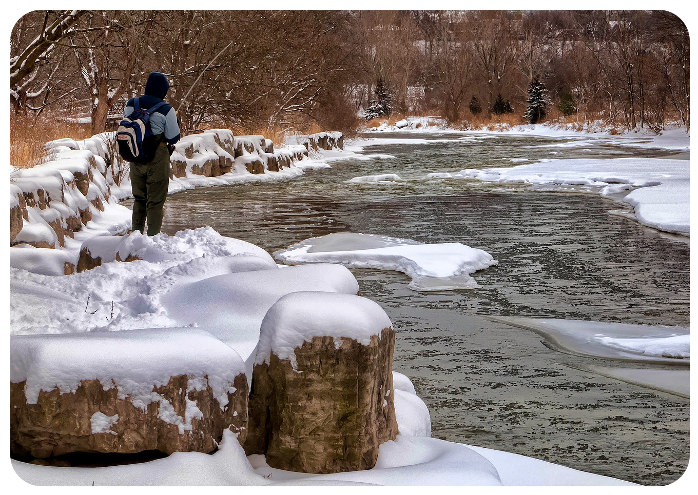

Hvad skal du vide om de forskellige årstider som lystfisker?
Læs også
Det rigtige grej, og andre tips og tricks
16. marts 2023
Top 3 bedste fiskespots i Østjylland og hvilke fisk man fanger der
16. marts 2023
Lystfiskeri er en af de udendørsaktiviteter, der har det hele: Fede naturoplevelser, spænding og masser af frisk luft! Der er mulighed for fangster hele året, så man er heller ikke begrænset af sæsonen. Hvis man ser på lystfiskerisæsoner er der primært vinter og sommer sæsonen. Det er i sær om vinteren man skal være skarp, og derfor også der jeg har haft størst fokus på tips, forklaringer og uddybende informationer.
Forskellige forhold
Årstid og temperatur
Årstiderne og ikke mindst temperaturen har en stor indvirken på fiskesæsonen.
Hver årstid har sine muligheder for godt lystfiskeri.
Det er bl.a. temperaturen der har en afgørende rolle for de store ferskvandsfisk.
Om sommeren vil man opleve at de foretrækker køligere vandtemperaturer.
Derfor vil der være et helt naturligt dykt i fiskekalenderen hos netop fersvandsfisk i årets varme måneder.
Parringsperiode
Fiskenes parringsperiode er ligeså en betydningsfuld faktor når vi taler fiske sæson hos de forskellige fiskearter.
Når fiskene parrer sig og efterfølgende gyder, er de ikke spor interesseret i at lede efter bytte.
Fiskeriet er derfor aftagende i disse perioder.
Dog vil man opleve et stigende fiskeri efter parringsperioden hvor fiskene er sultne og svømmer på rov.
Enkelte arter kan tilmed være fredede under deres parringsperiode.
Lysforhold
Er du lystfisker kan du formentlig nikke genkende til dette punkt.
Der er stor forskel på at fiske i sollys, let overskyet og regnvejr.
Forskellen ligger selvsagt i lyset, og de lysforhold de enkelte vejrsituationer giver i vandet.
Lysforholdene kan kortvarigt påvirke fiskeriet hos nogle fiskearter og måske tilmed den samlede fiskesæson.
Man vil opleve at fiskesæsonen for ferskvandsfisk er ekstra godt forår og efterår pga. temperaturskiftet og flere bevægelser i vandet.
Ser man på saltvandsfisk vil specielt efteråret være en god fiskesæson da de trækker ud på dybere vand.
7 Tips til havørred om vinteren:
• Jo koldere jo dybere ned i fjordene.
• Jo koldere det er jo nærmere ferskvand
• Find blød mørk/mørkebrun bund der hurtigere bliver varmet op af solen og holder på varmen end lys bund.
• Fisk gerne i hård fralandsvind ved kyster med større vanddybder i nærheden, hvor kold vand bliver skubbet ud, og varmt vand bliver trukket ind langs bunden.
• Fisk langsomt med mange og lange spinstop.
• Brug gerne kradse farver, så som pink,rød eller andre hidsige farver.
• lav opsøgende fiskeri, hele tiden bevæg dig efter at finde fiskene.
Du holder både varmen bedre og forøger din mulighed for at fange havørreder
Vinter fiskeri
Værdifuldt vejrskifte
Vinteren har indtil nu mest budt på ubarmhjertig vind og bidende kulde.
Men i dag kunne godt have været årets første forårsdag, hvis altså ikke det havde været en dag i slutningen af januar.
Da vi stiger ud af bilen, opdager vi, at vi ikke er de eneste på pladsen.
Vi beslutter dog at give pladsen et skud alligevel.
Vi får hurtigt rigget til, og min kammerat iler mod et nærtliggende rev.
Jeg må se mig slået, da jeg først skal have skiftet forfang, inden jeg kan begynde.
Jeg starter mit fiskeri ved siden af revet og leder efter fisk i badekarret under land.
Forholdene er perfekte.
Skrå pålandsvind fra venstre og fine dønninger det her skal bare give fisk!
Jeg har da heller ikke fisket længe, inden den første grønlænder sluger min skøjteprinsesse på knædybt vand.
Jeg får hurtigt den stålblanke halvmetersfisk i nettet.
Sådan en fisk kan varme de frostkolde fingre op igen.
Jeg pifter til kammeraten for at vise ham, at der er fisk på pladsen, men opdager, at han selv er travlt optaget med at fighte en fisk.
Koldt vejr og svært fiskeri
Bytteemnerne er små, fiskene er træge, vejret er barskt, og lysten til at komme på kysten kan derfor være sparsom.
Men hvorfor overhovedet bruge tid på at fiske kilometerlange kyster af i bidende kulde, blot med chance for et par enkelte fisk?
Svaret er drømmen om den store sølvbombe, den hiver vinterfiskeren afsted mod det kolde kystvand.
Skal man slippe afsted med at fange de helt stålblanke havørreder på de gode pladser, hvor du ved, der ikke har været fisket i dage-, måske endda ugevis, skal det foregå i vintermånederne.
Og vælger du de rigtige pladser på de rigtige dage, kan fiskeriet overstige dine vildeste forventninger.
Men der skal knokles for fiskene, som er spredte om vinteren.
De er endnu ikke samlet i stimer på samme måde som i foråret.
Så selv om du får et par gode fisk, er der ingen garanti for bonanzafiskeri, som man kan opleve i marts og april.
Men hvad gør det, når fiskene er pænt over gennemsnitsstørrelsen og spejlblanke?
Varmere vand giver flere fisk
Har du først været på vinterkysten i minusgrader og stiv kuling, ved du, hvilken dedikation der skal til for at forvilde sig ud i sådanne forhold.
Lige så vel som kystfiskeren har brug for hue og handsker for at holde det kolde vejr ud, har havørreden også brug for at spare på energien for at overleve.
Så længe vandet er under 2,5 grader falder fiskenes forbrænding drastisk.
Derfor har de heller ikke det store fødebehov i meget koldt vand.
Der kan sagtens være fisk på pladsen, man fisker på, men de kan være nærmest umulige at fange.
Når vinterens sølvmedaljer skal findes, søges derfor det varmest mulige vand.
Et vandtermometer er derfor guld værd, når du begiver dig på kystfiskeri om vinteren.
Dog kan eksempelvis kraftig strøm med varmere bundvand give gunstige fødepladser for havørreden, hvis det presses mod land, det kolde overfladevand til trods.
Fralandsvind kan give overraskende fiskeri, fordi vinden skubber det kolde overfladevand væk fra kysten og derved lader det varmere vand dominere de kystnære områder.
Flydende livline
Kilder, der har sit udspring i Danmark, er konsekvent omkring otte grader året rundt.
I områderne omkring å-udløb, er vandtemperaturen ofte højere end i de omgivende vandmasser.
Vandets saltholdighed er lavere, jo varmere vandet er, og havørreden skal derfor ikke bruge så meget energi på at udskille salt fra kroppen.
Derfor har den mere energi til at tage føde til sig.
Selv de mindste kilder kan forvandle fiskedagen fra middelmådig til god.
Har udløbet karakter af et vandløb, skal du huske at tjekke, om der er et fredningsbælte, inden du kaster fluen i vandet nær et udløb.
Kig langs kystlinjen
I takt med at de lave temperaturer nedsætter fiskenes bidelyst, kan det ofte være en fordel at servere noget velkendt for fiskene.
Gå det kystnære vand igennem og se, hvad der rør sig af liv.
Det rigtige blink, serveret for den rigtige fisk, giver i mine øjne en langt højere succesrate.
Hvis ørreden ikke har behov for at spise, skal den helst have noget særligt serveret foran sig, før den vil bryde sin vintertræghed og inhalere blinket.
Men det er vigtigt at nævne, at der ikke er regler uden undtagelser.
Prøv dig frem, så finder du før eller siden det, der virker på dagen.
Roligt spinnefiskeri
Under vinterfiskeriet med blink er det vgitigt, at tempoet sættes ned.
Brede agn, som kan fiskes langsomt uden at fange bunden, er derfor gode.
Blink, der ikke laver for store udsving i vandet, kombineret med langsom indspinning, er ofte medicinen til de træge ørreder.
De brede blink er også bedst, når man fisker i lavvandede vige eller fjorde, da de oftere går lidt højere i vandsøjlen ved langsom indspinning.
Andre agn som Fladbukken, Skruen og Snurrebassen er generelt gode, fordi de roterer om egen akse i spinstop.
Disse blink kommer virkelig til deres ret på dage, hvor fiskene skal lokkes til hug ved hjælp af lange spinstop.
Bundskraber-blink
På dage, hvor fiskene er rigtig svære, kan det endda være særdeles effektivt at sætte tempoet så langt ned, at blinket bliver trukket henover bunden.
Der er episoder fra den seneste vinter, hvor vi har set flere havørreder samle sig nysgerrigt omkring et blink, der er spinnet langsomt ind langs bunden, for derefter at hugge.
Nogle forbinder spinnefiskeri med monotont fiskeri uden charme, men tænker man lidt kreativt og tør udfordre de gængse teorier, så er man næsten garanteret nogle sjove og finurlige oplevelser.
Når det kommer til farver, har jeg personligt de bedste erfaringer med umalede eller neutrale farver.
En hurtig måde at skrælle farven af et blink er at bade det i acetone.
Det er nemt og fjerner malingen hurtigt.
Den perfekte vinterplads
Vintersolen giver sparsomt med varme, og selv på skyfri dage kan solens effekt på vandtemperaturen være dårlig.
På disse dage er det en god idé at rette blikket mod de lavvandede vige med mørk bund.
Den mørke bund absorberer bedre de sparsomme varmestråler, særligt ved middagstid, hvor solen står højest.
Selv på dage, hvor temperaturen ikke er meget over 7-8 grader i luften, kan temperaturen stige mærkbart i de lavvandede områder, og det ved havørreden godt.
Hvis vinteren er så hård, at den lægger låg på vandet, er det også her, man først vil finde kystnære byttedyr, efter isen har sluppet sit greb.
Sommer Fiskeri
Sommersol
Når kystvand i starten af juni for alvor bliver varmt, ændrer havørredfiskeriet sig en del. Høj sol og spritklart varmt vand er håbløse forhold til havørredfiskeri, men når solen synker om aftenen, vågner havørrederne og søger ind mod det føderige, lave vand.
Derfor er sommerens fiskeri lig med natfiskeri.
I juni måned kan havørrederne komme ind langs alle de kendte kystpladser.
Sågar de stillestående fjorde og bugter kan byde på gode chancer, men i juli/august koncentrerer fiskeriet sig omkring rev og pynter, der byder på dybt, køligt og gerne strømfyldt vand.
Om natten er det vigtigt at fiske sit agn helt oppe i overfladen, så havørreden kan se agnet mod den lyse nattehimmel.
Pladserne er få og koncentrerede i sommermånederne samtidig med, at mange har ferie.
Derfor er alle gode pladser godt besøgt, og man kan ikke regne med at have kysten for sig selv.
Til gengæld fanges de største havørreder i sommermånederne.
Fisk mellem 50 og 60 cm er helt normale, og 5 til 7 kilos havørreder, er ikke en sjældenhed i sommernætterne.
Vær opmærksom på, at sommerfiskeriet er meget svingende.
En plads kan den ene nat virke total livløs for så næste nat at live op til det rene fiskeeventyr.
Man bør generelt ikke skifte plads, det er nætterne for korte til, og man kan let spilde for megen god fisketid i bilen.
Spinnefiskerens sommeragn
Traditionelt spinnefiskeri med blink eller woblere kan være rigtigt godt i juni, men senere på sommeren bliver det sværere at lokke fisken på disse agn. Da skal man til at arbejde med de helt små blink og spinnere. Især sorte små agn er gode til natfiskeri.